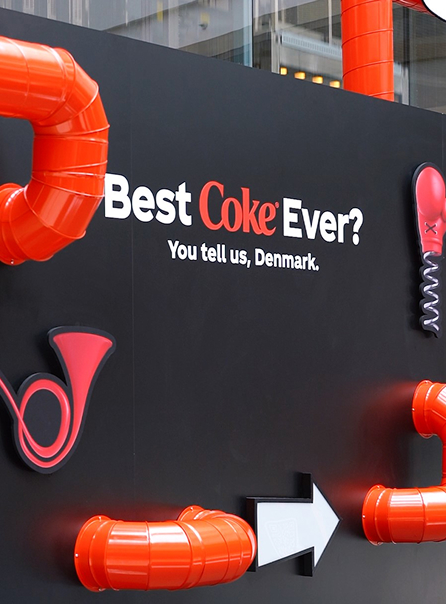

Strategia ed identità del brand
Dal punto di vista strategico, la campagna si distingue per l’utilizzo di una comunicazione multicanale e perfettamente integrata, diffusa attraverso social network, contenuti video e piattaforme digitali. I messaggi sono costruiti in modo breve, diretto e immediato, con l’obiettivo di catturare rapidamente l’attenzione del pubblico in un ambiente mediatico estremamente competitivo e caratterizzato da tempi di attenzione sempre più ridotti.
Questa scelta strategica permette a Coca-Cola di rafforzare ulteriormente il legame tra prodotto e comunicazione, riportando al centro elementi fondamentali come il gusto e la qualità, senza però rinunciare alla propria identità storica e valoriale. In questo modo la campagna conferma la capacità del brand di innovarsi costantemente, mantenendo al tempo stesso una forte riconoscibilità globale e una presenza stabile nell’immaginario collettivo dei consumatori.
